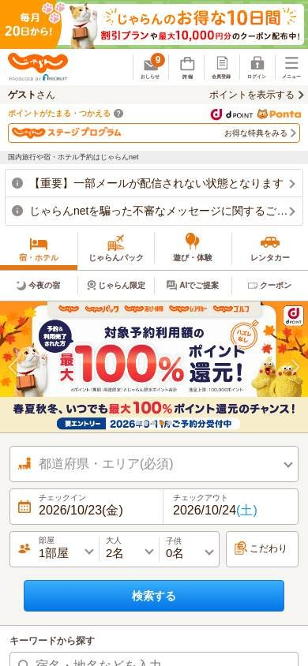
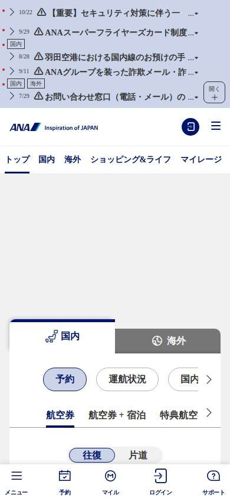

Turismo y reservas
Los seleccionados
Los tres sitios más visitados de Japón, según estadísticas de tráfico.
En resumen: lo que hacen los líderes
La pantalla de inicio de cada uno


Estilo visual
Colores, imágenes, tipografía y cuánta información muestran.
Tu estilo visual debería…
- Si sos aerolínea o marca de viaje, paleta acotada y una foto grande; si sos portal, podés mostrar mucha información.
Lo que tienen en común: Los portales de viajes japoneses son densos y coloridos; las aerolíneas son sobrias, con una paleta acotada y fotos grandes.
La paleta de cada uno
Medida sobre la primera pantalla. Los colores de marca salen del header; el resto muestra cuánto espacio ocupa cada color.
Así lo resuelve cada uno
Ficha comparativa
| Aspecto | Jalan | ANA | Japan Airlines |
|---|---|---|---|
| Paleta | Variada: naranja, rojo y muchos colores de promo | Acotada: azul + blanco | Acotada: rojo + blanco + foto oscura |
| Imágenes | Ilustraciones y fotos chicas | Pocas imágenes | Una foto grande de destino |
| Densidad | Muy alta | Media | Baja, con aire |
| Botones | Azules y naranjas | Azules con borde | Rojo, recto |
Header
La franja de arriba con el logo y los accesos.
Tu header debería…
- Secciones por tipo de viaje y una franja superior para avisos.
- Botón de cuenta destacado en el color de la marca.
Lo que tienen en común: Header blanco con el logo a la izquierda y las secciones por tipo de viaje; los avisos importantes van en franjas arriba.
Así lo resuelve cada uno
Ficha comparativa
| Aspecto | Jalan | ANA | Japan Airlines |
|---|---|---|---|
| Fondo | Blanco con franja naranja de promo | Blanco, con avisos arriba | Blanco |
| Logo | Naranja, a la izquierda | Azul, a la izquierda | Rojo, a la izquierda |
| A la derecha | Ingresar, registro y buscador | Idioma, reservas, «Registro» y «Ingresar» | Idioma, buscar y botón rojo «Iniciar sesión / Registrarse» |
| Secciones | Hoteles, vuelo + hotel, autos | Nacional, internacional, compras, millas | Reservar, Mi reserva, Experiencia, Millas |
Primera pantalla
Lo primero que se ve debajo del header.
Tu primera pantalla debería…
- Buscador con pestañas (reservar, mi reserva, check-in, estado del vuelo) como protagonista.
Lo que tienen en común: El buscador con pestañas por tipo de gestión es el centro. Las aerolíneas lo combinan con una foto grande; los portales, con mucha información.
Así lo resuelve cada uno
Ficha comparativa
| Aspecto | Jalan | ANA | Japan Airlines |
|---|---|---|---|
| Formato | Mapa para elegir destino + buscador detallado | Buscador de vuelos con pestañas | Foto grande de destino + buscador con pestañas debajo |
| Pestañas | Hotel, vuelo + hotel, autos | Reservar, estado, check-in | Reserva, Mi reserva, Facturación, Estado del vuelo |
| Densidad | Muy alta | Media | Baja |